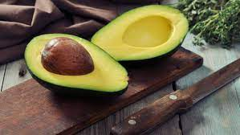
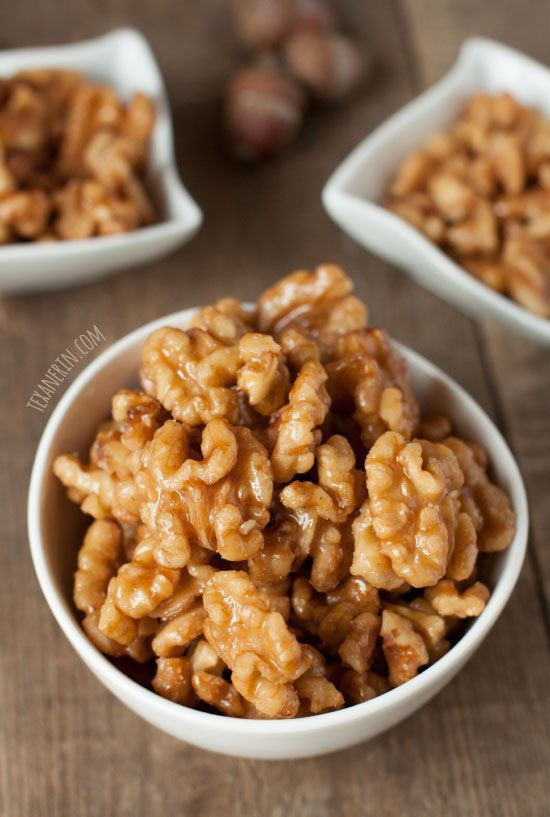

RECOMMENDED HEALTHY FOODS TO EAT
Eating a wide variety of nutritious foods, including fruit, vegetables, nuts, seeds, and lean protein, supports overall health. Fill your plate with colorful, versatile meals that are good for you.
Fruits and Berries
Fruits and berries are nutritious and easy to incorporate into your diet.
-
Apples
Apples contain fiber, vitamin C, and antioxidants. They are filling and make a great snack.
-
Avocados

Avocados are high in healthy fat, fiber, potassium, and vitamin C. Use them as a salad dressing or spread on toast.
-
Blueberries
Blueberries are delicious and high in antioxidants.
-
Strawberries
Strawberries are nutritious and low in carbs and calories, providing vitamin C, fiber, and manganese.
-
Bananas
Bananas are high in potassium and contain good fiber. They're great in smoothies and oatmeal.
Vegetables
Vegetables are the foundation of a nutritious diet. They are high in vitamins and minerals and can be eaten raw or cooked.
-
Spinach
Spinach is nutrient-rich and low in calories. It's versatile and can be used in salads, smoothies, or cooked dishes.
-
Broccoli
Broccoli is a cruciferous vegetable packed with vitamins K and C. It can be steamed, roasted, or eaten raw.
-
Bell Peppers
Bell peppers are rich in vitamins A and C and can add flavor to various dishes.
-
Carrots
Carrots are crunchy and sweet, high in beta carotene and fiber.
-
Kale
Kale is a leafy green vegetable rich in vitamins and minerals. It's great in salads or cooked dishes.
Nuts and Seeds
Nuts and seeds are nutrient-dense and provide healthy fats, protein, and fiber.
-
Almonds

Almonds are high in vitamin E and magnesium. They're a great snack and can be added to various dishes.
-
Chia Seeds
Chia seeds are rich in omega-3 fatty acids, fiber, and protein. They can be added to smoothies or oatmeal.
-
Walnuts
Walnuts are high in antioxidants and healthy fats. They're great for snacking or in salads.
-
Flaxseeds
Flaxseeds are rich in omega-3s and fiber. They can be added to smoothies or baked goods.
-
Pumpkin Seeds
Pumpkin seeds are high in magnesium and zinc. They make a great snack or salad topping.
Lean Protein
Lean protein sources are essential for muscle repair and growth. Consider adding these to your diet.
-
Chicken Breast
Chicken breast is a low-fat protein source. It's versatile and can be grilled, baked, or stir-fried.
-
Turkey
Turkey is a great source of lean protein and can be used in various recipes.
-
Fish
Fish like salmon are high in omega-3 fatty acids and protein. They can be baked, grilled, or poached.
-
Eggs
Eggs are a nutrient-rich protein source. They can be boiled, scrambled, or used in various dishes.
-
Greek Yogurt
Greek yogurt is high in protein and probiotics. It's great for breakfast or as a snack.
By incorporating a variety of these foods into your diet, you can support your overall health and wellness.